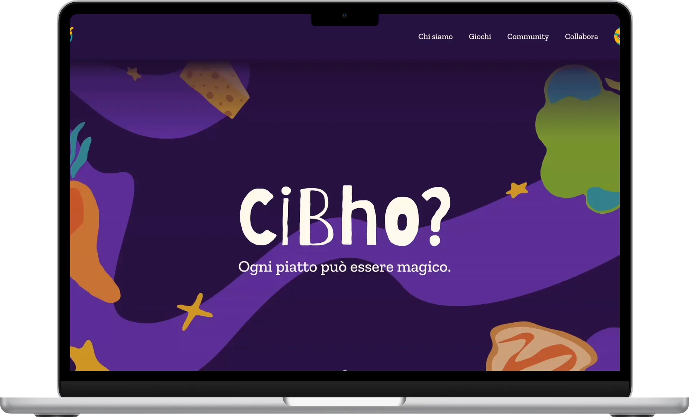
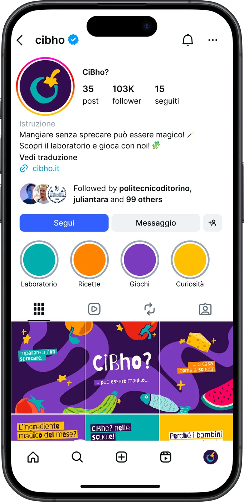
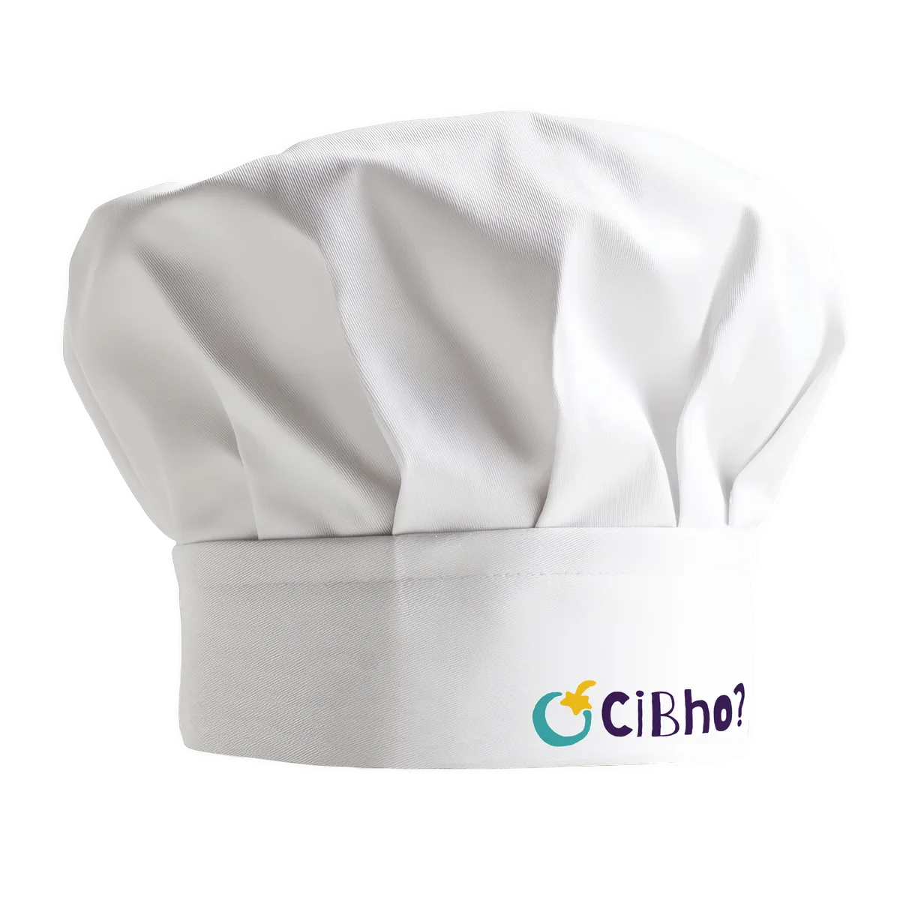
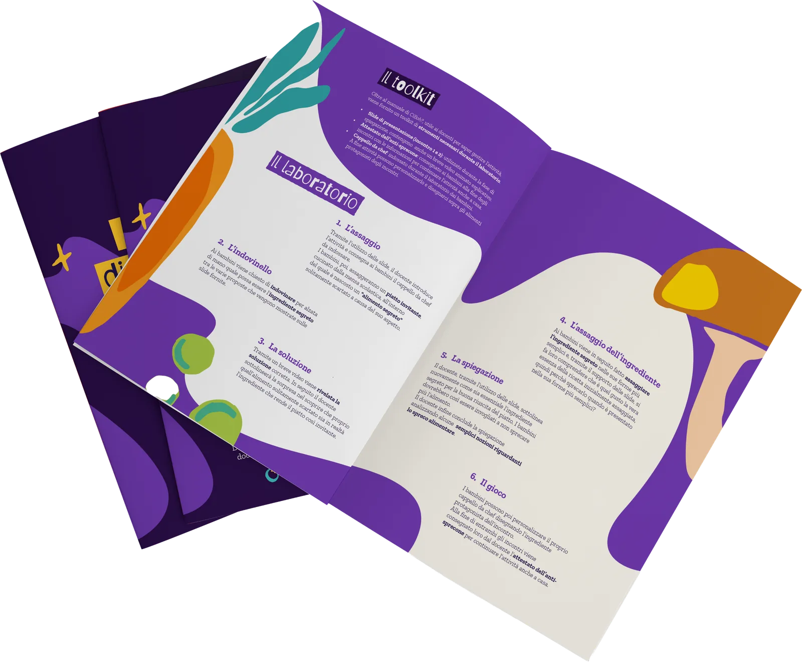

CiBho? projeto acadêmico
CiBho? é um toolkit voltado para o público infantil de 6 a 11 anos, aplicável em escolas e refeitórios e que visa a conscientização acerca do desperdício alimentar e a aceitação de novos ingredientes.
Além da participação na idealização e conceituação do projeto, fui responsável pelos grafismos, ilustrações e motions de suporte.




O projeto foi desenvolvido no Politecnico di Torino em parceria com a empresa italiana de energia Iren, visando a sustentabilidade, e o festival Graphic Days.